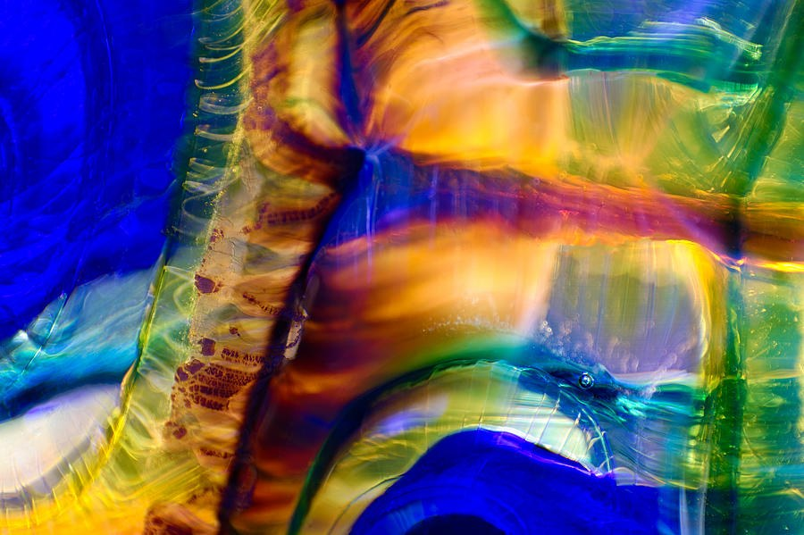

The Library · Omaste Witkowski
Cobalt Blue and Amber Gold, Glowing Like Light Through Glass
"Amber Tide in Cobalt" is a translucent abstract of curved color bands, ripples and tiny bubbles, available as a print on Fine Art America.

Look at the upper left first. A deep field of cobalt blue sits there, and it curves along the bottom of the frame too. Through the center, amber, orange and gold gather and glow as if light were passing through them from behind.
There is no object here and no scene. I made this piece to be looked at for its color, its light and its flow, and those three things carry the whole image.
Choose Your Print on FAAMade to order by Fine Art America · 30-day money-back guarantee
What your eye finds when it stays a while
The first thing you notice is the glow. Warm amber patches sit against blue shadow, and bright white glints run along the curved ridges. The layers look thick and glossy, as if you were looking into glass.
Then the details appear. Fine ripples run down the left edge. A cracked, rust-brown strip marks the left-center. A few tiny bubbles sit in the lower right, and they are what make the surface read as glass-like. A dark diagonal line meets a horizontal band of purple and orange near the middle, and the image has a clear point to settle on.
Keep looking and it shifts between soft, blurred swirls and sharp, crisp ridges. Your eye travels from the blue field to the amber center and back along the curves. On the right, green, teal and yellow areas open up and cool the warmth. It is the kind of image you can return to and still find something new in.
What you'll see in this piece
- Cobalt blue against amber, gold and orange: strong warm-cool contrast that gives a room one clear color moment.
- Light that seems to pass through the layers: the glow makes the image feel lit from within, with real depth rather than flat color.
- Bright white glints along the curved ridges: small highlights that make the surface look glossy and wet.
- A rust-brown crackle strip and fine ripples: close detail that rewards a second and third look.
- Tiny bubbles in the lower right: a quiet clue that the material is glass-like, which gives the abstraction a stained-glass feel.
- Sweeping bands and a dark diagonal: movement that pulls the eye toward the center and keeps it travelling.
Where it fits
This is a wide horizontal image, so it suits the long walls: above a sofa, a console, a bed or a desk, or along an entry wall. The saturated blue and amber are strong enough to be the main color in the room, and the bold bands and high contrast should hold up at medium to large scale.
Emerald, teal, violet and magenta appear in smaller accents, so it can sit with a range of palettes. The mood is energetic, rich and jewel-like, and the colors alone are reason enough to hang it.
- This is for you if you want one vivid, colorful abstract to set the tone of a living room, office, entry or bedroom.
- This is for you if you love the warm-against-cool look of blue and gold, and the glow of stained glass.
- This is for you if you want an abstract with real depth and surface detail rather than flat or busy color.
- This is for you if you want a wide horizontal piece that works on looks alone, with no backstory needed.
What you get on Fine Art America
- A print of "Amber Tide in Cobalt, Translucent Abstract", listed as abstract macro photography.
- Your choice of size, and of paper, canvas, metal or framed finish.
- Each print is made to order by Fine Art America.
- It ships from their facility, typically within a few business days.
- A 30-day money-back guarantee from Fine Art America.
Choose Your Print on FAAMade to order by Fine Art America · 30-day money-back guarantee
Questions before you choose
Is it really glass?
It reads as glass or something glass-like, from the translucence, ripples and tiny bubbles. The listing describes it as abstract macro photography. What you see in the image is what you get in the print.
Will the colors look as rich as they do on screen?
The piece depends on its saturated cobalt, amber and gold, and you can choose the paper, canvas, metal or framed finish that suits you. Screens and prints always differ a little, and the 30-day money-back guarantee covers you if it isn't right for your wall.
What size should I choose?
It is a horizontal image, so it suits wide walls such as above a sofa, bed or desk. The sizes on offer appear on the listing page, where you can pick the one that fits your space.
Picture that cobalt and amber glow on the wall you walk past every day, with the white glints catching the light as the room changes through the day.
When you're ready, open the listing, choose your size and finish, and bring this piece home.
Choose Your Print on FAAMade to order by Fine Art America · 30-day money-back guarantee
Find your own piece with the art adventure · Ask the gallery what fits your wall